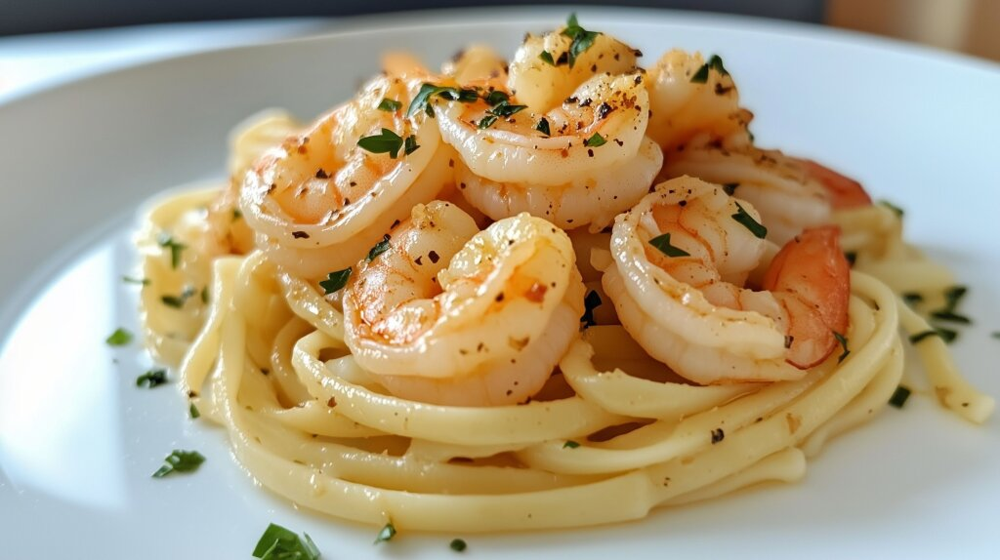

Home
Shrimp Scampi

Description
Servings: 6 // Prep Time: 20 minutes // Cook Time: 20 minutes // Total Time: 40 minutes
A deceptively simple dish, shrimp scampi is guaranteed to impress dates and in-laws alike. Al dente pasta topped with tender shrimp, cooked in a light and refreshing sauce with lemon, butter and white wine, finished with parsley. Its a low-effort dish with delicious and asthetic results.
Shrimp scampi is also versatile, with many addtions and substitutions to the dish that can elevate or change it. Need to get your veggies in? Add some asparagus or broccoli to the mix. Don't want to add wine? Subsitute chicken or vegetable broth. Want some more complex flavors? Add some shallots, tarragon or chives, or even some dijon mustard to completely transform the dish. Love cheese? Top it with some parmesan! The possibilities are endless.
Ingredients
- 16 ounces linguine pasta (one package)
- 2 tablespoons butter
- 2 tablespoons extra-virgin olive oil
- 2 cloves garlic, minced
- I pound shrimp, peeled and deveined
- 1 pinch kosher salt and ground pepper
- 1/2 cup dry white wine
- substitute option: chicken or vegetable broth
- 1 lemon, juiced
- 2 tablespoons butter
- 2 tablespoons extra-virgin olive oil
- 1/4 cup finely chopped fresh parsley leaves
- 1 teaspoon extra-virgin olive oil, or to taste
Optional Ingredients
- 1 broccoli crown or asparagus bunch, chopped- add some veggies!
- 1 pinch red pepper flakes - add some spice!
- 1 or 2 shallots, finely chopped - add some flavor!
- 1/2 tablespoon dijon mustard - add some zing!
- Top with 1/4 cup parmesan - who doesn't love cheese?
Steps
- Gather ingredients.
- Bring a large pot of salted water to a boil and cook the linguine in the boiling water until al dente; 6 to 8 minutes. Drain water.
- Add the optional ingredients of broccoli or asparagus in this step.
- In a large skillet over medium heat, melt 2 tablespoons of butter with 2 tablespoons olive oil.
- Add the garlic to the hot butter; cook and stir until fragrant. 3 to 4 minutes.
- Add the optional ingredients of shallots and/or red pepper flakes in this step.
- Season shrimp with salt and pepper. Add to the skillet with butter mixure and cook until pink, stirring occasionally; 2 to 3 minutes. Remove shrimp from skillet and keep warm.
- Pour the white wine and lemon juice into the same skillet and bring to a boil, while making sure to scrape the browned bits off the bottom of the skillet.
- Melt 2 tablespoons of butter in the same skillet, then stir 2 tablespoons of olive oil and bring to a simmer.
- Toss linguine (and any optional ingredients; broccoli, asparagus, parmesan), shrimp, and parsley into the butter mixture until coated; season with salt and pepper. Drizzel with 1 teaspoon olive oil to serve.
- Serve, topping with extra parsley and/or parmesan, with crunchy bread. Enjoy!
Check Out These Other Recipes
Home